import numpy as np
import pandas as pd
import seaborn as sns
import matplotlib as mpl
import matplotlib.pyplot as plt
from mpl_toolkits.mplot3d import Axes3D
import plotly.express as px
# Import and copy raw dataset
df_raw = pd.read_csv("../../../../data/population.csv")
df = df_raw.copy()Python Intensive Workshop Project
Python
26Summer
data: population.csv
Use this to render (Save 1st!): !quarto render ../report.qmd
Copy/paste codeblock
Python Intensive Workshop Project
Visualising population data from CIA World Factbook
The chosen dataset is the CIA World Factbook’s “../../../../data/population.csv”. This dataset includes annual and biannual data from 1950-2023 across a variety of countries, regions and aggregate categories. Our 1st step is to import the dataset and load relevant libraries:
Then we create a set of new columns for possibly interesting statistics
# Creates new columns to store the ratio of births by women aged 15-19 to overall births, and the conditional life expectancy differential; i.e. the expected lifespan at birth vs expected LE for people who reach 15 years of age
df["young_birth_ratio"] = (df["Births.by.women.aged.15.to.19..thousands."]/df["Births..thousands."])
df["le_diff"] = (df['Life.Expectancy.at.Age.15..both.sexes..years.'] -df['Life.Expectancy.at.Birth..both.sexes..years.'] + 15)
df['mf_rat40'] = 105*((1000-df["Male.Mortality.before.Age.40..deaths.under.age.40.per.1.000.male.live.births."])/(1000-df["Female.Mortality.before.Age.40..deaths.under.age.40.per.1.000.female.live.births."]))
df['mf_rat60'] = 105*((1000-df["Male.Mortality.before.Age.60..deaths.under.age.60.per.1.000.male.live.births."])/(1000-df["Female.Mortality.before.Age.60..deaths.under.age.60.per.1.000.female.live.births."]))Column names are unwieldy and difficult to work with; we can create a dictionary of relevant column names to select a subset of columns at each stage
#%%
# Creates a dictionary of column name changes and relevant values
colmap = {
'Year':'year',
'Region':'region',
'Population.Density..as.of.1.July..persons.per.square.km.':'pop_density',
'Median.Age..as.of.1.July..years.':'median_age',
'Population.Growth.Rate..percentage.':'pop_growth',
'Mean.Age.Childbearing..years.':'mean_mother_age',
'young_birth_ratio':'young_birth_ratio',
'Life.Expectancy.at.Birth..both.sexes..years.':'le_birth',
'Life.Expectancy.at.Age.15..both.sexes..years.':'le_15',
'Sex.Ratio.at.Birth..males.per.100.female.births.':'mf_ratiopc',
'le_diff':'le_diff',
'mf_rat40':'mf_rat40',
'mf_rat60':'mf_rat60',
'Total.Fertility.Rate..live.births.per.woman.':'fertility'
}
# renaming variables of interest for usability
df.rename(columns=colmap,inplace=True)
#%%Identifying key data groupings
The dataset includes country-level data, as well as a variety of aggregates. We can identify these aggregates by checking for unique “Type” labels in the data:
df["Type"].unique()array(['World', 'Label/Separator', 'SDG region', 'Development Group',
'Special other', 'Income Group', 'Region', 'Subregion',
'Country/Area'], dtype=object)The Type names allow us to identify several key groupings of data:
- Sustainable Development Goal (SDG) regions
- UN development groups
- World Bank income groups
- Geographic regionsExploring income group data
First, we examine trends in income group aggregates, storing income group data in a new subset:
# Creates a subset of data using type "Income Group"
df_i = df[df["Type"] == "Income Group"] # can use .reset_index()
# creates an array of income groups excluding combined groups e.g. upper-and-middle
rgs = np.delete(df_i["region"].unique()[2:8],[1,3,4])
df_s = df_i[(df_i["region"].isin(rgs))]
# Excludes columns that aren't of interest
df_s = df_s[colmap.values()]Subset is to remove some of the excess groupings, which make the data hard to read as seen here:
sns.relplot(df_i, x = 'year', y= 'pop_growth', kind = 'line', hue = 'region')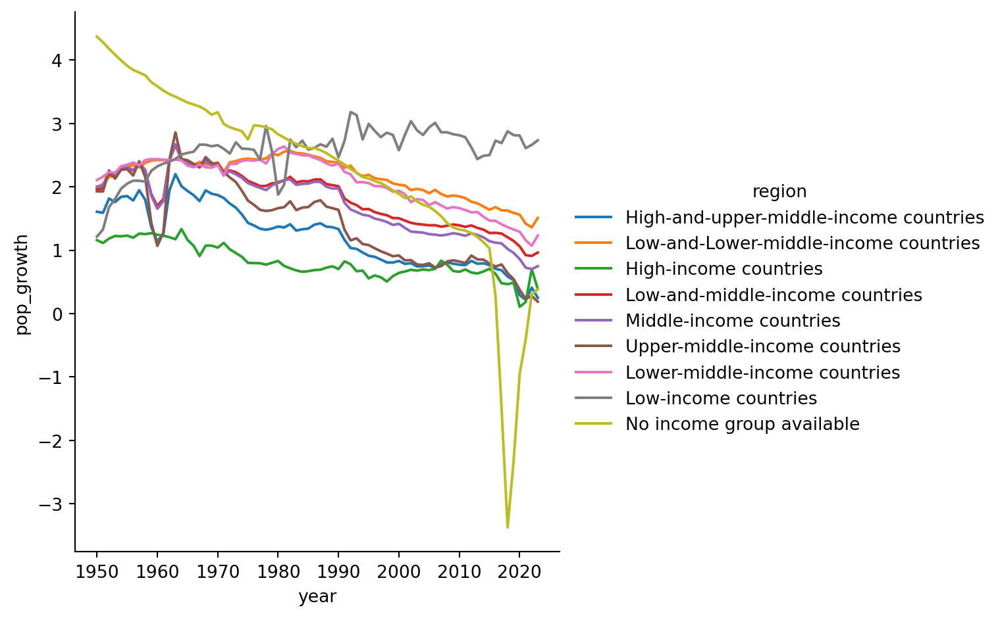
We can examine differences in sex ratios at a variety of ages:
#%%
fig, axs = plt.subplots(ncols=3,sharey=True,sharex=True)
sns.lineplot(df_s, x = 'year', y= 'mf_ratiopc', hue = 'region',ax=axs[0])
sns.lineplot(df_s, x = 'year', y= 'mf_rat40', hue = 'region',ax=axs[1],legend=False)
sns.lineplot(df_s, x = 'year', y= 'mf_rat60', hue = 'region',ax=axs[2],legend=False)
axs[0].legend([],frameon = False)
fig.legend(loc='outside lower center', bbox_to_anchor=(0.25, -0.25), title="Income level")
for ax, title in zip(axs, ['Birth', 'Age 40', 'Age 60']):
ax.set_title(title)
ax.set_ylabel("Male:Female Ratio (%)")
ax.hlines(y=100, xmin=1950,xmax=2025,colors = "k", linestyles="dashed")
ax.tick_params(axis="both", which="major", labelsize=8, length=5, width=1.0)
axs[0].set_xticks(np.arange(1950, 2026, step=25))
plt.tight_layout()
plt.figure()
#%%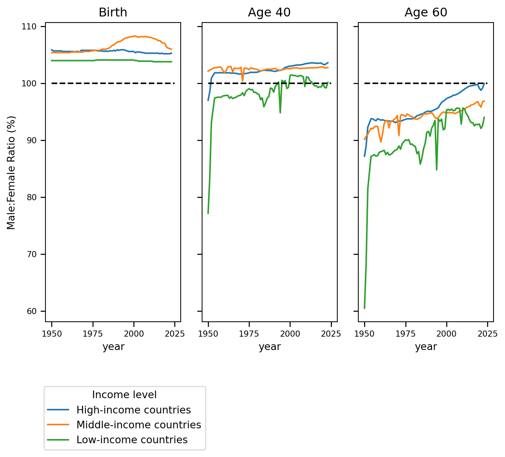
<Figure size 672x480 with 0 Axes>Removing early years for better visibility
#%%
fig, axs = plt.subplots(ncols=3,sharey=True,sharex=True)
sns.lineplot(df_s[df['year']>1955], x = 'year', y= 'mf_ratiopc', hue = 'region',ax=axs[0])
sns.lineplot(df_s[df['year']>1955], x = 'year', y= 'mf_rat40', hue = 'region',ax=axs[1],legend=False)
sns.lineplot(df_s[df['year']>1955], x = 'year', y= 'mf_rat60', hue = 'region',ax=axs[2],legend=False)
axs[0].legend([],frameon = False)
fig.legend(loc='outside lower center', bbox_to_anchor=(0.25, -0.25), title="Income level")
for ax, title in zip(axs, ['Birth', 'Age 40', 'Age 60']):
ax.set_title(title)
ax.set_ylabel("Male:Female Ratio (%)")
ax.hlines(y=100, xmin=1950,xmax=2025,colors = "k", linestyles="dashed")
ax.tick_params(axis="both", which="major", labelsize=8, length=5, width=1.0)
axs[0].set_xticks(np.arange(1955, 2026, step=23))
plt.tight_layout()
plt.figure()
#%%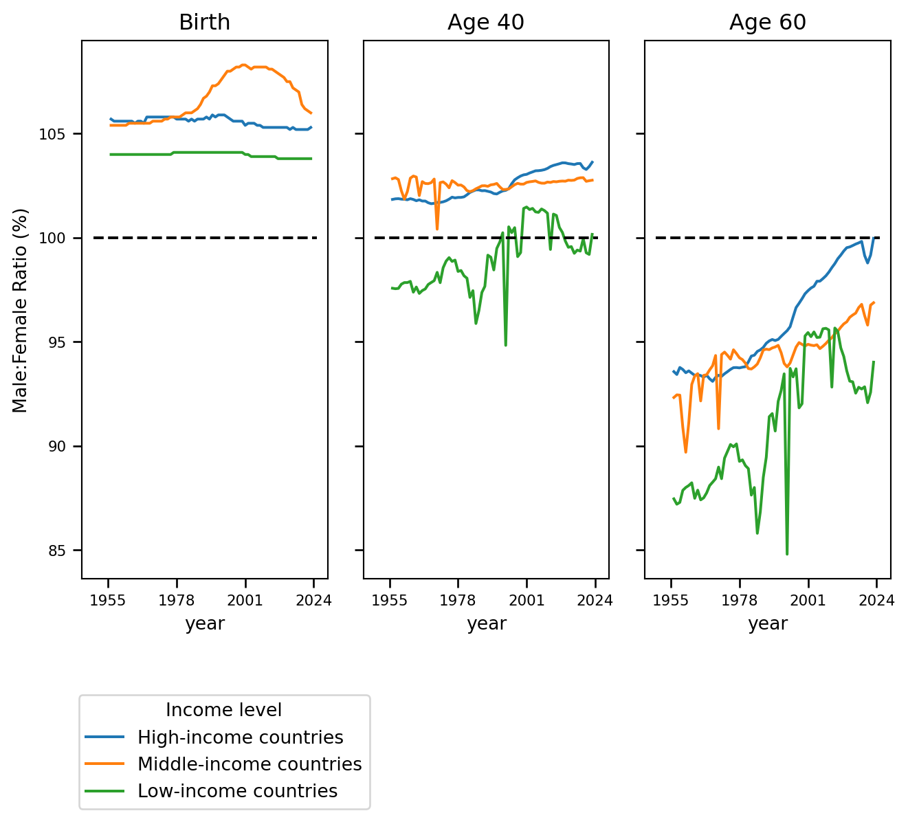
<Figure size 672x480 with 0 Axes>Zooming in on the difference in birth ratios:
#%%
sns.relplot(df_s[df['year']>1955], x = 'year', y= 'mf_ratiopc', hue = 'region',kind='line')
plt.title('Sex ratio at birth: Males born per female (%)')
plt.ylabel("Male:Female Ratio (%)")
#%%Text(57.38270833333335, 0.5, 'Male:Female Ratio (%)')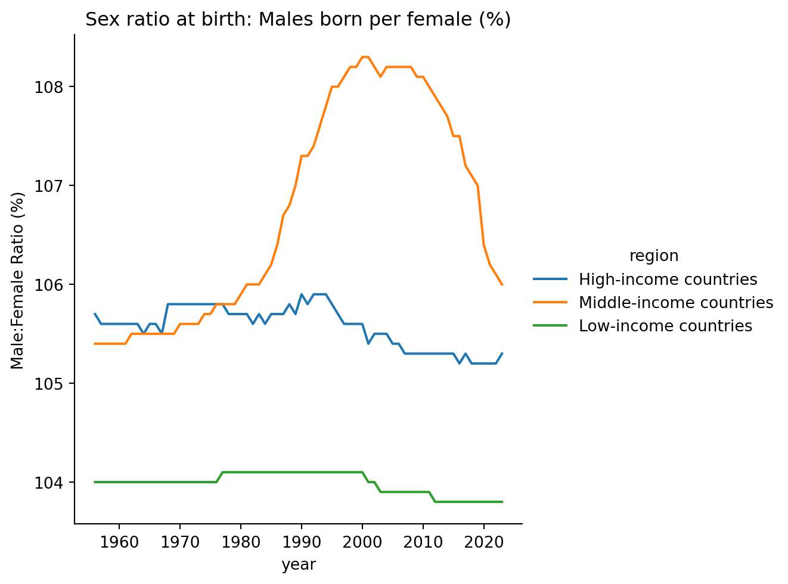
3d graph showing how the difference in life expectancy at birth vs at 15 years and sex ratios has changed over time
px.line_3d(df_s[df['year']>1955],x='year',y='le_diff',z='mf_rat60',color='region')A couple other graphs that seem surprising/interesting
sns.relplot(df_s, x = 'year', y= 'pop_growth', kind = 'line', hue = 'region')
sns.relplot(df_s, x = 'year', y= 'median_age', kind = 'line', hue = 'region')
sns.relplot(df_s, x = 'year', y= 'pop_density', kind = 'line', hue = 'region')
sns.relplot(df_s, x = 'year', y= 'mean_mother_age', kind = 'line', hue = 'region')
sns.relplot(df_s, x = 'year', y= 'le_diff', kind = 'line', hue = 'region')
sns.relplot(df_s, x = 'year', y= 'le_birth', kind = 'line', hue = 'region')
sns.relplot(df_s, x = 'year', y= 'young_birth_ratio', kind = 'line', hue = 'region')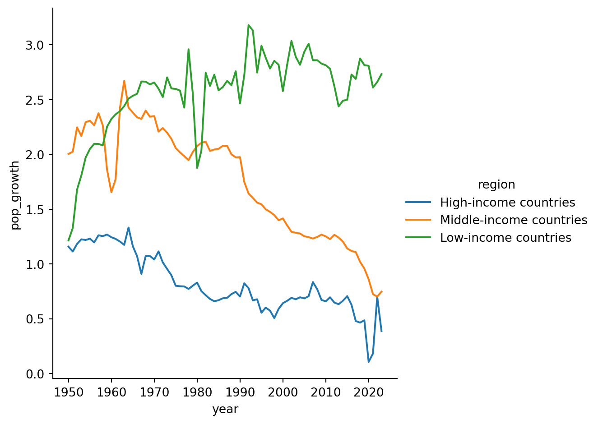
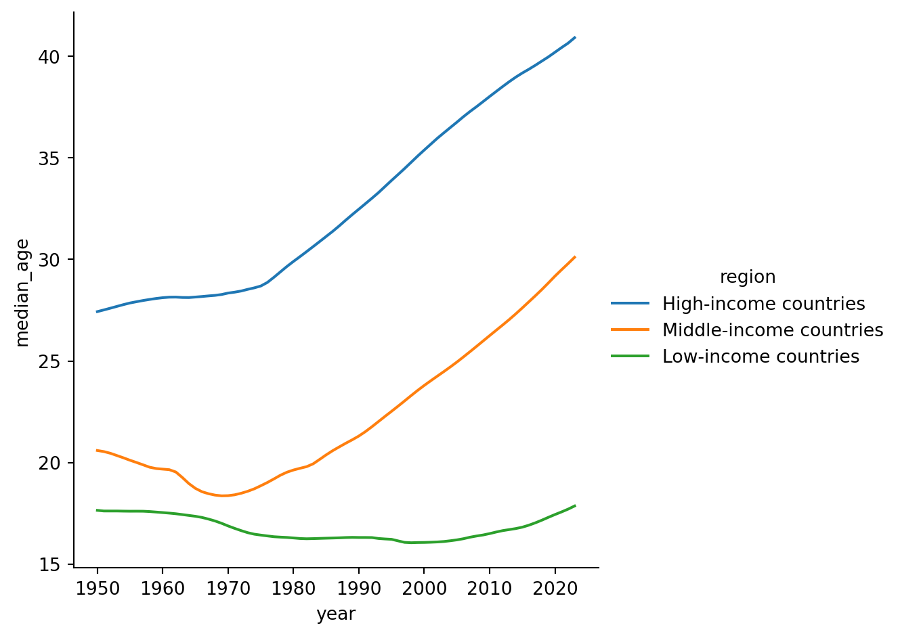
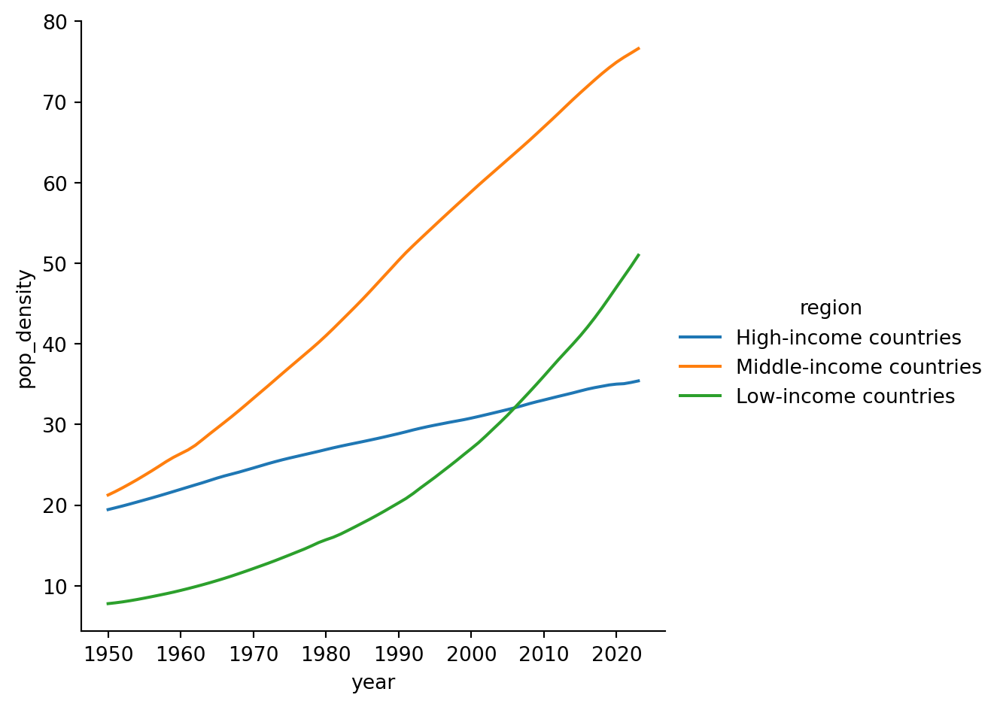
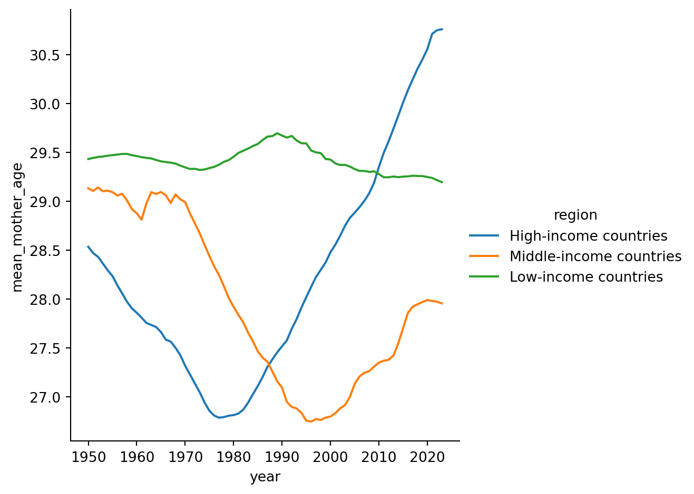
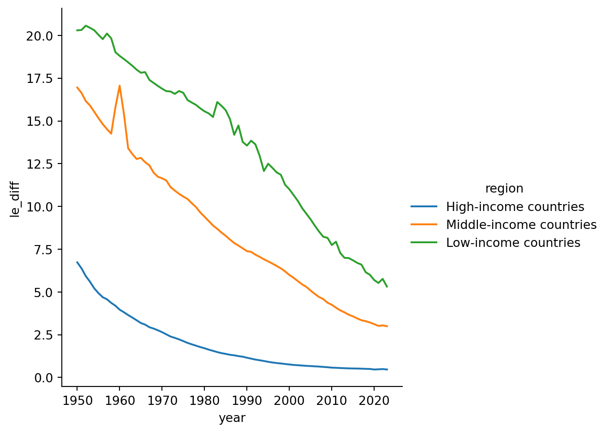
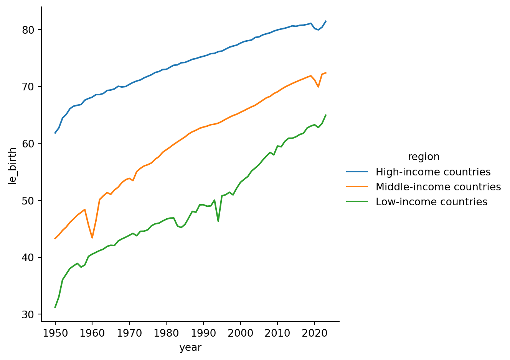
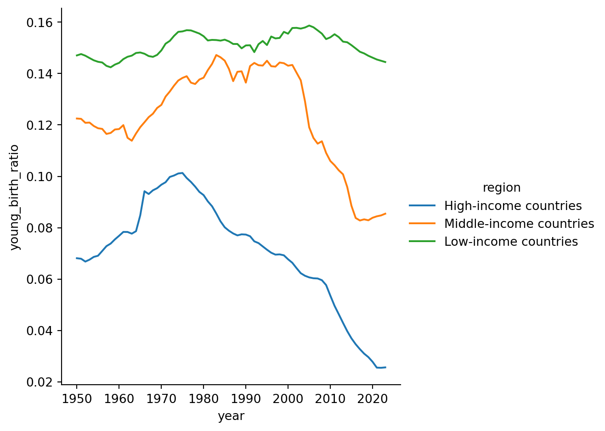